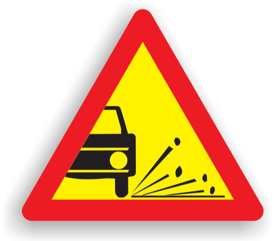

Raspunsuri corecte: 0
Timp: 0/20
Care dintre următoarele indicatoare reprezintă deviere temporară?


Niciunul
Toate cele 3 indicatoare
Doar al treilea indicator
Care dintre următoarele indicatoare reprezintă abatere temporară?

Toate cele trei indicatoare
Doar primul indicator
Niciunul
Doar al doilea indicator
Ce reprezinta indicatorul din imagine?
Presemnalizarea rutei ocolitoare
Îngustare temporară
Terminarea abaterii temporare
Ce reprezinta indicatorul din imagine?
Drum îngustat în ambele sensuri
Drum îngustat pe partea dreaptă
Drum îngustat pe partea stângă
Ce reprezinta indicatorul din imagine?

Drum lunecos
Acostament periculos
Drum cu denivelări
Ce reprezinta indicatorul din imagine?

Circulație în ambele sensuri
Prioritate pentru circulația din sens invers
Prioritate pentru circulația față de sensul invers
Ce reprezinta indicatorul din imagine?

Presemnalizarea unui sector cu circulație alternantă
Lucrări de tratamente a suprafeței părții carosabile
Succesiune de puncte de lucru
Ce reprezinta indicatorul din imagine?

Presemnalizarea rutei ocolitoare
Abatere temporară
Presemnalizarea unui sector cu circulație alternantă
Ce reprezinta indicatorul din imagine?

Îngustare pentru vehiculele destinate transportului de marfuri
Abatere temporară pentru vehiculele cu gabarit depășit
Abatere temporară
Ce reprezinta indicatorul din imagine?

Lucrări
Împroșcare cu pietriș
Acostament periculos
Care dintre următoarele indicatoare reprezintă îngustare temporară?


Doar primul
Toate cele 3
2 si 3
Ce reprezinta indicatorul din imagine?

Sfârșitul tuturor restricțiilor
Sfârșitul interdicției de staționare
Sfârșitul interdicției de a depăși
Ce reprezinta indicatorul din imagine?

Presemnalizare lucrări pe străzi
Lucrări de tratamente a suprafeței părții carosabile
Presemnalizarea unui sector cu circulație alternantă
Ce reprezinta indicatorul din imagine?
Sfârșitul interdicției de staționare
Sfârșitul interdicției de a depăși
Sfârșitul tuturor restricțiilor
Ce reprezinta indicatorul din imagine?

Succesiune de puncte de lucru
Presemnalizarea unui sector cu circulație alternantă
Semnalizarea unui utilaj care se deplaseaza lucrand